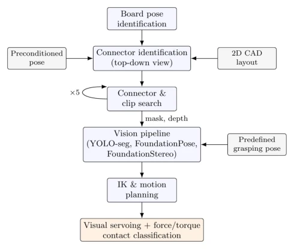
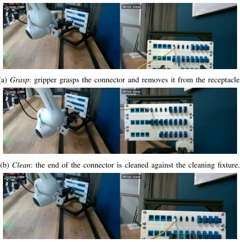
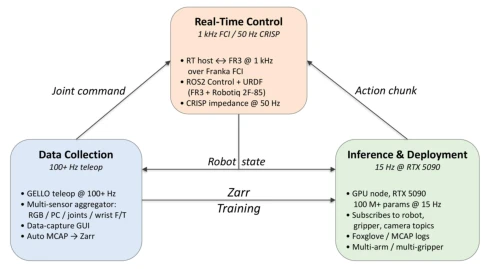
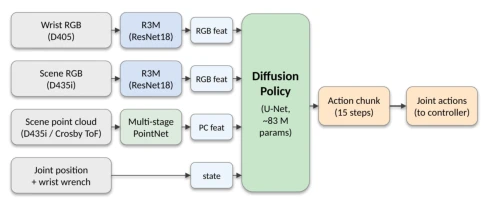
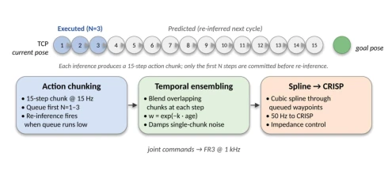
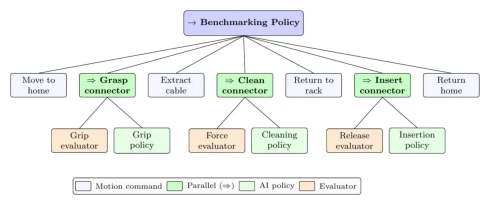
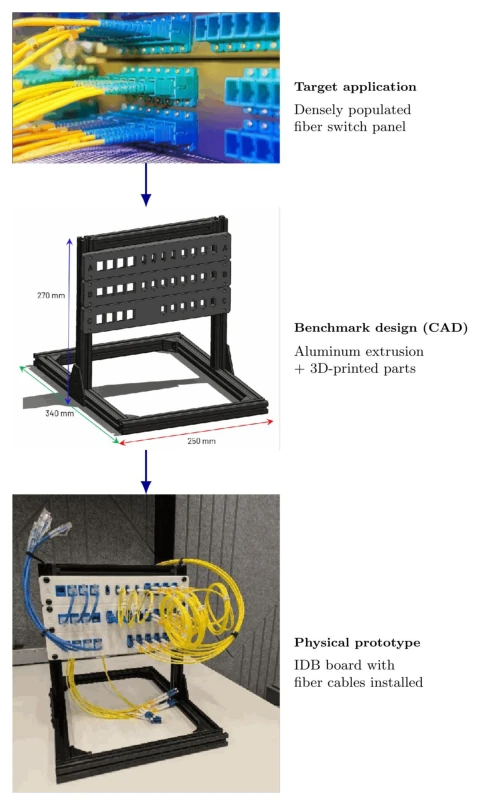
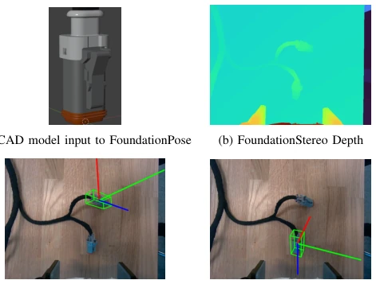

This paper finally pulls industrial dexterous manipulation back from "simulation toys" to the "quagmire of reality". The authors did not engage in empty talk, directly building three IDB boards, especially for data center cable management, accurately grasping the pain points. The AG-iDP3 multimodal diffusion policy is indeed much stronger than monocular RGB (78% vs 36%), proving that "seeing the world with multiple eyes" is not a gimmick in the industry. But do not celebrate too early; a 22% failure rate in data centers requiring 99.99% uptime is simply a disaster. Moreover, the paper admits the visual model is sensitive to background objects, collapsing when changing a red block, indicating generalization is still a critical flaw. The so-called "only 100 demonstrations needed" sounds appealing, but in real industrial scenarios, data collection and cleaning costs are not this low. Overall, it is a solid engineering endeavor, but far from "robustness".
Dexterous manipulation in the industrial field, such as data center cable routing and precision assembly, remains the human domain to this day [1], [2]. Despite decades of robotics research, traditional computer vision and control-based pipelines (such as the NIST ATB4 scheme) are extremely fragile in actual deployment [6]. Previous schemes rely on fine CAD model matching and force control parameter tuning; once environmental lighting changes or connector models are slightly tweaked, the entire system must be recalibrated or even code rewritten, with extremely poor scalability [8]. Existing research mostly focuses on simulation or desktop tasks with loose tolerances, lacking strict benchmarks for high-requirement industrial environments (such as 99.99% uptime). Therefore, the authors aim to build a hardware-software combined benchmark platform (IDB), and explore an end-to-end imitation learning framework, attempting to achieve stronger robustness and generalization capabilities than traditional methods with less data, filling the gap from laboratory to production line.

Fig. 2. Classical vision pipeline used to solve the six-connector harness insertion challenge on NIST ATB4.
The overall framework is divided into three layers: benchmark hardware, data infrastructure, and policy core. First, IDB boards simulate real industrial scenarios. Data flow is managed by DAG-ROS, based on ROS2 to achieve decoupling of teleoperation data collection, real-time control, and inference deployment. The core policy AG-iDP3 adopts a multimodal diffusion model, inputs include wrist RGB, scene RGB/point cloud, joint states, and wrist torque. Visual encoding uses R3M (RGB) and PointNet (point cloud), proprioception is concatenated directly. Diffusion U-Net outputs Action Chunk. During deployment, through action chunking and temporal ensembling, smooth 15Hz inference output to 50Hz controller. Additionally, a behavior tree architecture is introduced, combining dexterous manipulation (AI policy) with classical motion primitives (evaluator), for example, grasp and insert phases are controlled by the policy, while state judgment is completed by the evaluator, ensuring the reliability of the task chain. This hybrid architecture avoids the problem of pure end-to-end policies unable to terminate, achieving flexible task orchestration.

Fig. 7. The phases of the IDB Board #1 baseline task, captured during a teleoperated demonstration. Each panel shows the scene camera view (left) and the wrist camera view (right), which are used as policy inputs.

Fig. 8. DAG-ROS imitation-learning infrastructure, comprising three sub- systems (data collection, real-time control, and inference & deployment) connected by labeled data-flow arrows. Subsystem details and the role of each arrow are described in Section IV.

Fig. 9. AG-iDP3 framework, shown in its full multimodal configuration (COMB-iDP3). Wrist RGB (D405) and the optional scene RGB (D435i) are each encoded by an R3M [22] ResNet18 backbone; the scene point cloud (D435i stereo or EVAL-ADTF3175 ToF) is encoded by a multi-stage PointNet [23]; proprioceptive states (joint position and wrist wrench) are unencoded. All vectors are concatenated into a single observation that is input to a diffusion U-Net which outputs an action chunk of T joint actions.

Fig. 10. Each inference produces a 15-step action chunk (top), from which only the first N steps are committed to execution before the next inference step begins. Overlapping predictions across chunks are temporally ensembled (Eq. 1) and an interpolated cubic spline derives commands through the committed action steps for 50 Hz streaming to the CRISP impedance controller.

Fig. 11. Hybrid behavior tree orchestrating the datacenter cable-cleaning task.
Experiments focus on IDB Board #1's data center cable cleaning and re-plug task, divided into grasp, clean, insert three phases. A total of 6 sensor configurations were evaluated, with 48 trials per configuration. Results show that introducing 3D context (point cloud or multi-view RGB) significantly improved grasp success rate (88%-98% vs 48%). Best configuration (multi-view RGB + R3M) total success rate reached 78%, far exceeding monocular RGB baseline (36%). ToF camera performed better than RealSense stereo camera in industrial environments. Ablation experiments show that torque sensors are only effective in the insert phase. However, the study also revealed the fragility of the visual model: removing background objects during training or changing cable routing leads to failure. Although claiming only about 100 demonstrations are needed, actual deployment still needs to cope with generalization challenges brought by scene changes.

Fig. 4. IDB Board #1: datacenter cable-management benchmark. Top to bottom: the target application (densely populated fiber rack), the initial benchmark design (aluminum extrusion + 3-D-printed parts, dimensioned), and the final assembly of the board used in this study.
其他图片Other Figures

Fig. 3. Intermediate representations in the classical vision pipeline. (a) Tex- tured CAD model provided as the reference mesh to FoundationPose. (b) Dense depth map reconstructed from RealSense stereo IR pairs via FoundationStereo. (c, d) Projected 6-DOF bounding boxes produced by Foun- dationPose, overlaid on detected connectors in the scene.